When John and Margaret Sloan came up from South Carolina, Clinton County had only just been organized and most of it was standing timber. They brought at least three small girls born in Carolina — Jane, Frances and Martha — and everything else they owned, in a wagon. One old account of Margaret’s sister’s family says the trip took six weeks. Nobody wrote down the year, but the children tell us: Martha was born in South Carolina in November 1827; the next, Elisabeth, was born in Indiana about 1831.
They did not come alone. Margaret’s sister Martha had married Samuel McQuerns (1789–1852), the Newberry church elder — son of the blacksmith of the same name who had witnessed their grandfather’s will, and who, the Annals of Newberry say, had once been pressed into the British navy and watched the Royal George go down at Spithead. McQuerns went ahead of them. In October 1827 he paid for 160 acres in Clinton County, giving his residence as Preble County, Ohio — almost certainly Hopewell, the settlement the Rev. Alexander Porter had led out of South Carolina with his whole congregation. He heads the list of seventeen charter members of the Presbyterian church at Frankfort, organized in May 1831 — the earliest firm date we have for any of them actually living in Indiana. Martha died at Frankfort in November 1833, and the next August the county court made Samuel guardian of her children so that their mother’s share of Fanny Drennan Sloan’s estate could be collected.
1832Providence Church
The Seceders wasted no time building a church of their own. It stood at the southwest corner of what is still called Old Providence Cemetery, just over the township line in Washington Township — on ground, Ben found, first bought from the government by Samuel McQuerns.
The first church organized in the vicinity of Madison township, was named Providence church, and of the United Presbyterian denomination. … This church was organized and church building erected at the southwest corner of the cemetery, in the year 1832. Its first pastor was the Rev. John Reynolds, who served from 1832 to 1840. … The elders have been as follows: 1832, John Sloan, Major John Brown and Joseph Steele.
Claybaugh, History of Clinton County, 1913
When Madison Township was organized in 1839, “the first trustees were William Henry and John Sloan.” When he died he still owed for his subscriptions to two church papers out of New York, The United Presbyterian & Evangelical Guardian and The Pulpit of the Associate Reformed Presbyterian Church, mailed to him at the Rossville post office.
1835 & 1837Two forties from the government
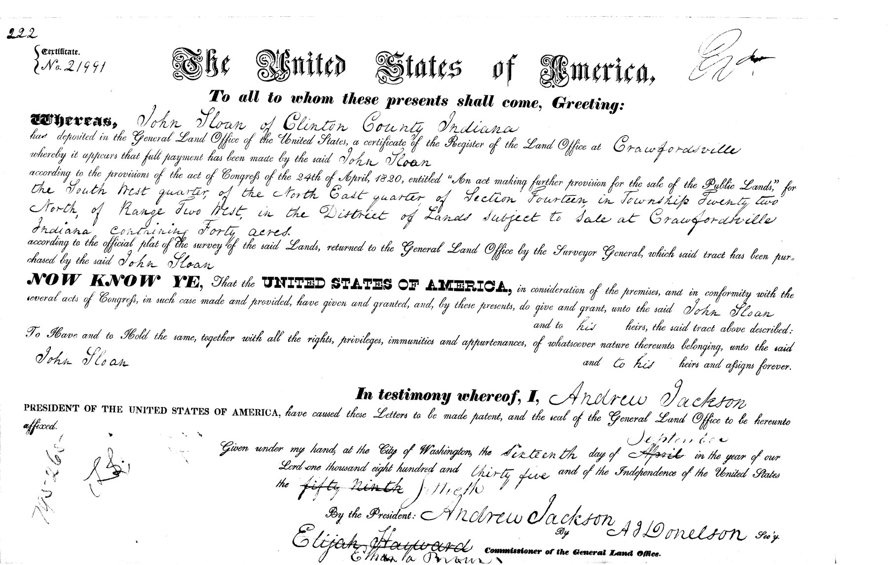
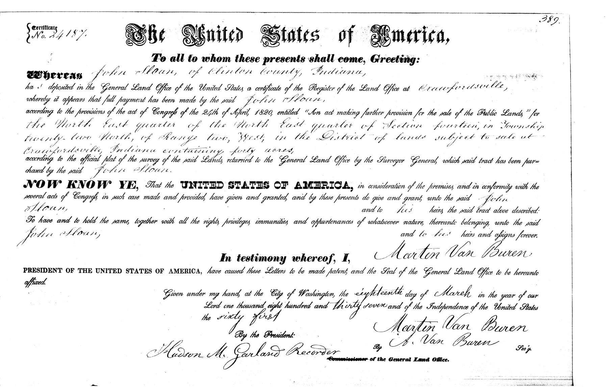
John Sloan “of Clinton County Indiana” paid cash at the Crawfordsville land office for two forty-acre tracts in Section 14, Township 22 North, Range 2 West: the southwest quarter of the northeast quarter (patent dated 16 September 1835, in Andrew Jackson’s name) and the northeast quarter of the northeast quarter (18 March 1837, Martin Van Buren). The same eighty acres appear on his last tax receipt: $7.40 for the year.
The village on the maps is Hamilton, a crossroads village that has since faded away; the family’s mail and trading went to Mulberry, Jefferson and Rossville.
1854A hard year
John Sloan fell sick on the fifth of July, 1854. Dr. J. S. McClelland rode out from Jefferson six times in seven days, at three dollars a visit. John died on the tenth, aged “60 years 7 months and 6 days.” He left no will. Margaret took her widow’s share in August, bought back the family wagon at the estate sale — and died herself on the sixteenth of October, “in the 57 year of her age.” No record says what killed either of them.
Because there was no will, the court had every last thing on the place written down and priced. Ben transcribed the whole file at the Frankfort library. It is the closest thing we have to walking through their door.
| From the inventory, 23 August 1854 | Appraised |
|---|---|
| Roan horse | $90.00 |
| Bay horse (kept by the widow) | $77.00 |
| Black horse colt | $75.00 |
| 124 bushels of wheat | $118.75 |
| 8½ acres of corn, standing | $56.00 |
| Wagon & bed | $30.00 |
| Nine sheep | $9.00 |
| Fanning mill | $8.00 |
| One rifle gun | $6.00 |
| Corner cupboard | $6.00 |
| Side saddle | $5.00 |
| Three [spinning] wheels & two reels (widow) | $3.00 |
| Loom & apparatus | $2.00 |
| Two wash kettles (widow) | $1.50 |
| Clock | $1.00 |
| Money on hand | $45.25 |
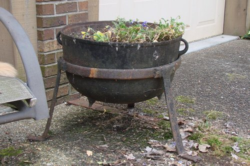
The sale was cried on the farm on 24 August. The rifle brought twelve dollars, double its appraisal. Daughter Martha bid forty dollars for the sorrel colt. Enoch Reavis — whose great-granddaughter Bessie would marry a Sloan seventy-eight years later — bought something too. And the ninety-dollar roan horse was knocked down for ten, with a note in the margin: “The roan horse bid off for John Sloan minor heir.” The neighbors, it seems, stood back and let the seventeen-year-old boy keep his father’s horse.
One of those two wash kettles is still in the family. Jill Sloan Walters — Uly’s granddaughter — had it in her yard in Evansville in 2017, planted with flowers. Ellis had the other.
The administrator ordered two Vermont marble headstones from Charles Fromm of Delphi, five feet high and eighteen inches wide, polished, with a willow — $25 apiece, to be set in “Providence Church Yarde” by June 1855. Both Ben and Jill have walked Providence looking for them. They’re gone — sunk, most likely, a few inches under the sod.
The seven childrenWhat became of them
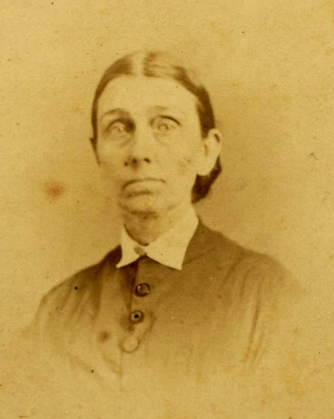
Jane (1822–1894), the eldest, married William K. Compton in February 1848 and moved to Carroll and then Tippecanoe County. Compton kept a store at Rockfield until February 1860, when the Delphi paper advertised the public sale of his goods and property; in February 1872 he was the subject of a “hospital inquest” in Tippecanoe County — the hearing by which Indiana sent people to the state hospital at Indianapolis — and in March 1873 he died at Indianapolis of a fractured skull, “in some kind of accident.” Jane’s portrait, found in the Carroll County Historical Society’s files, is the only photograph we have of anyone who made the trip from South Carolina. Her daughters were remarkable: Susan was one of the first three women to graduate from the Lafayette public schools, in 1869, and the next year the first to finish a course at a Lafayette business college; she was in Purdue’s register for 1880–81 as a student of industrial art, and was widowed at twenty-seven; Emma taught school for eighteen years. (When Emma died in 1941 her will left fifty dollars apiece to her Clinton County cousins, Ulysses Sloan among them.) The two sisters kept house together in Lafayette for the rest of their lives, and took in their aunt Martha (1827–1901), who never married and who is buried back at Providence among the Seceders.
Frances (1825–1909) married William Tousey, a Union veteran and wagon-maker, in Lafayette in the 1860s. Her obituary is the one place a newspaper says it outright: “daughter of John and Margaret Sloan, born in Newberry, South Carolina, April 7, 1825.” She was the last of the seven, and died at her nieces’ house “while sitting in her chair reading her Reporter” — on the tenth anniversary of her husband’s death, at about the same hour. Elisabeth married a James Thompson and is hard to trace. And two of the girls married two of the English boys next door: Mary Ann (1833–1870) married John C. Pickering, and Emily (1836–1902) married Thomas J. Pickering — who, in October 1911, had a heart attack in the Frankfort courtroom where he had come as a witness, and died that afternoon as he was being carried up the hospital stairs. “Tom Pickering was a good man,” said the Mulberry paper. Which brings us to the only son.
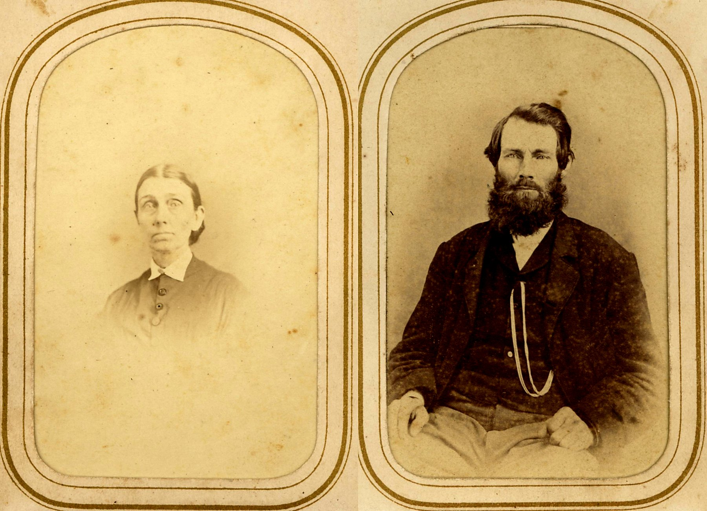
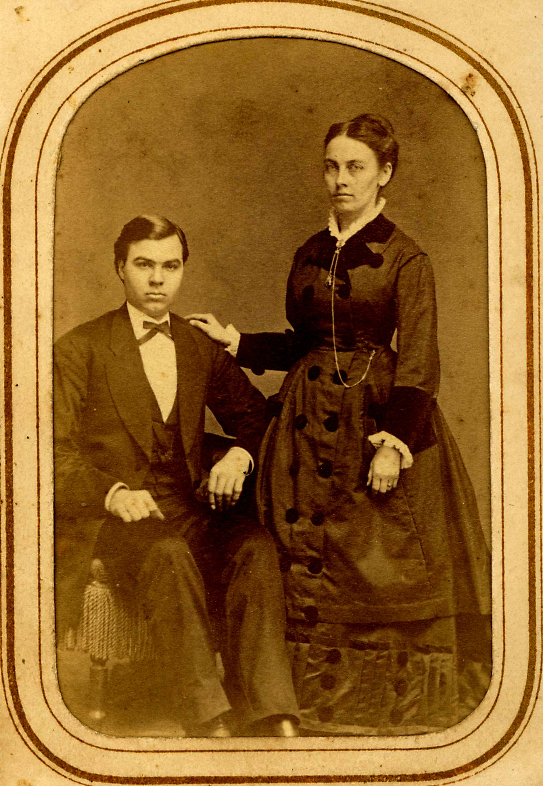
From Yorkshire, by way of CanadaThe Pickerings
Thomas Pickering was born in the North Riding of Yorkshire in February 1807. In January 1831, in the little moorland chapel of Harwood Dale, he married nineteen-year-old Elizabeth Robinson; both of them signed the register with a mark. They emigrated to Upper Canada, where their son John C. was born in 1835, and in 1837 came on to Clinton County — “and built themselves a cabin in the big woods in southern Ross township,” as a son’s obituary put it. They rented for fourteen years before they could buy land in Madison Township in 1851, next to the Sloans. Six sons and one daughter; forty-five grandchildren by the time Thomas died in 1889.
1837 – 1907John R. Sloan and Elizabeth Ellen Pickering
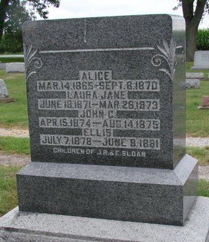
John R. was seventeen when both his parents died. He and his sisters held on to the farm. In 1863 his name went onto the Civil War draft rolls. On 25 January 1860 he had married Elizabeth Ellen Pickering, the English couple’s only daughter, and they set about filling the house: Elizabeth Ellen (1862), Alice (1865), Laura Jane (1871), John C. (1874), Ulysses (1876), and Ellis (1878).
Four of the six died small — Alice at five, Laura Jane before she was two, John C. at sixteen months, little Ellis just short of three. They share one stone. Only Lizzie and Uly grew up. When Uly named his first son in 1902, he named him Ellis.
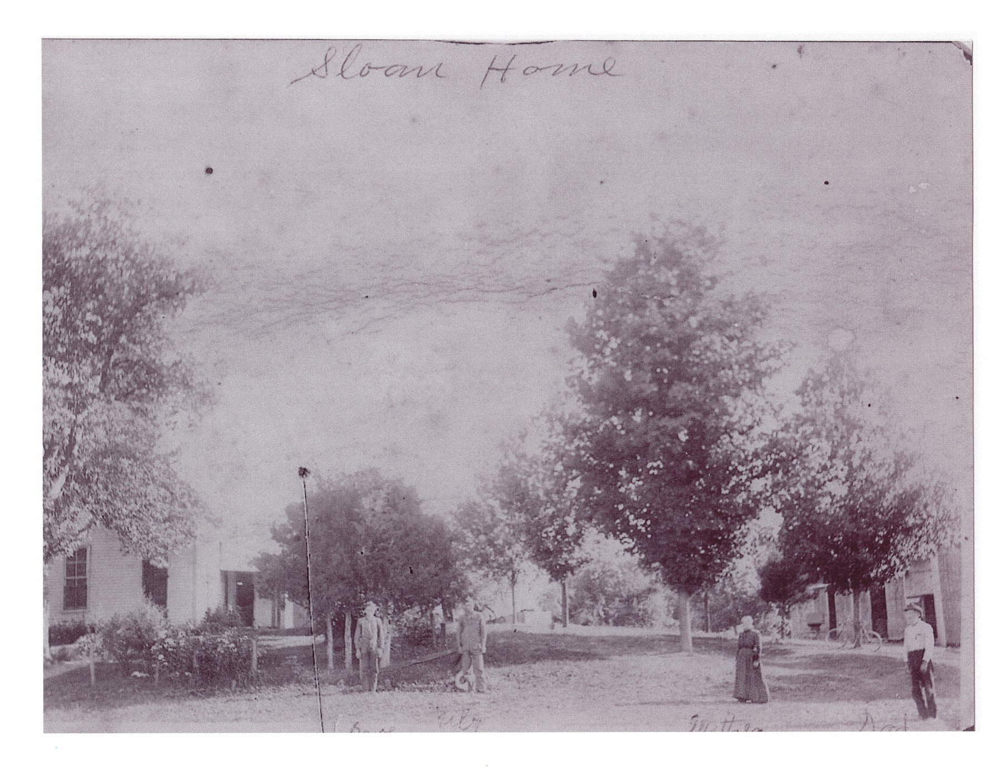
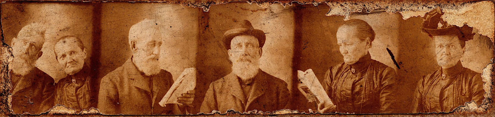
By 1903 John R. had built the place up to 146 acres. He tried retiring to Mulberry and couldn’t stand it:
Mr. Sloan lived his entire life, with the exception of two years, in the immediate neighborhood where he died. At one time he rented his farm and bought property in Mulberry. He came here and remained two years, but was dissatisfied with town life, preferring the activities incident to a life on the farm. After moving back to the old home place he did not again take up the active management of the farm, but gave it over to the care of his son. … John Sloan was a quiet, unassuming man and was one of the communities’ best citizens. In all the relations of life he acted his part well.
“John Sloan’s Funeral,” Mulberry newspaper, June 1907
He died of Bright’s disease in June 1907, a member of Pleasant Hill Presbyterian Church — the same church, up by Cambria, where the Sharps worshipped. Elizabeth lived until 1922. Their daughter Lizzie married James E. Person of Mulberry; on a Sunday morning in September 1938, at seventy-six, she was fatally hurt when the Persons’ car was struck broadside at the Fetterhoff corner north of Pyrmont, on their way to Delphi. Her descendants, the Bryans of Mulberry, are said to have had the Sloan family Bible.
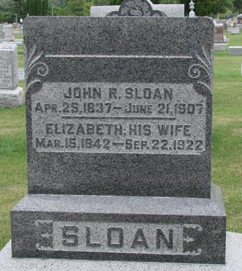
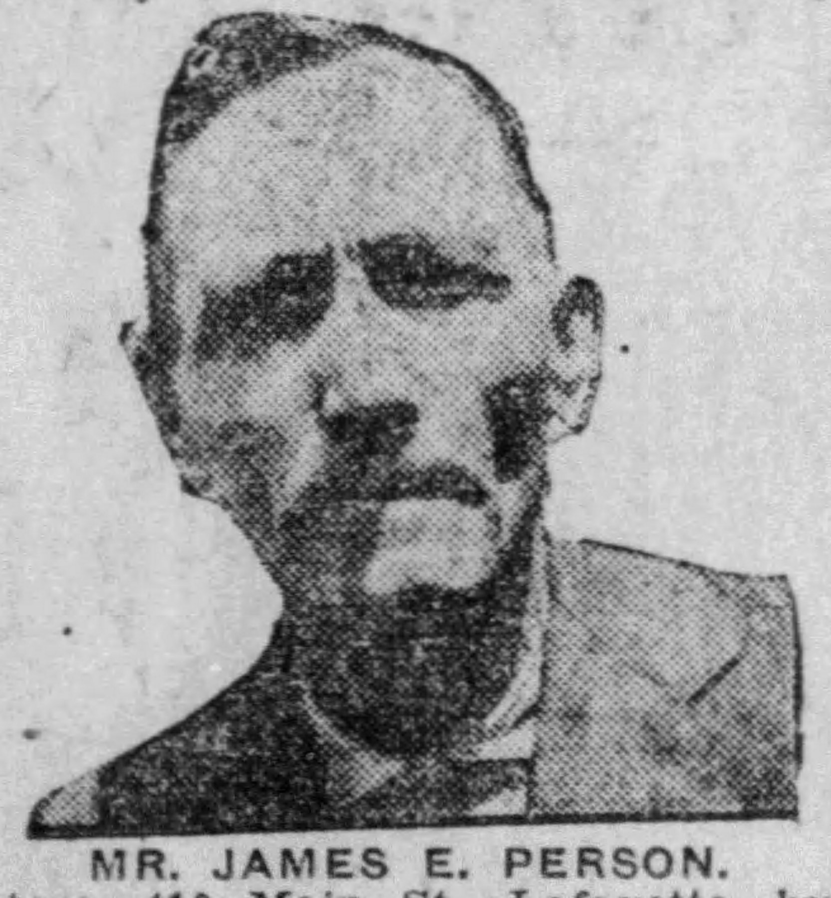
All the cousinsDescendants of John & Margaret
Ben’s working chart of the families that came from the first Indiana Sloans. Our own line is highlighted.
- John Sloan (1793–1854) m. Margaret Sloan (1797–1854)
- Jane P. Sloan (1822–1894) m. William K. Compton (1824–1873)
- Susan C. Compton (1848–1922) m. Charles W. Enfield (1848–1875)
- Emma Jane Compton (1857–1941)
- Frances P. Sloan (1825–1909) m. William Tousey (1831–1899)
- Martha Sloan (1827–1901)
- Elisabeth C. Sloan (abt 1831 – before 1909) m. James Thompson (probably)
- Mary Ann M. Sloan (1833–1870) m. John C. Pickering (1835–1916)
- George W. Pickering (1859–1931) — about ten children
- Caroline M. Pickering (1861–1938) m. Willis T. Ewing — about five children
- Frances Jane Pickering (1864–1945) m. Henry B. Michael — about five children
- Elizabeth Bell Pickering (1866–1948) m. Josiah Lewis Michael — about four children
- John Thomas Pickering (1869–1882)
- Emily Sloan (1836/7–1902) m. Thomas J. Pickering (1838–1911)
- Elizabeth M. Pickering (1860–1933) m. Noah F. Hazlett
- Sylvester Pickering (1860–1921) m. Flora Bennett — two children
- Lida Dell Pickering (1871–1957)
- John R. Sloan (1837–1907) m. Elizabeth E. Pickering (1842–1922)
- Elizabeth Ellen Sloan (1862–1938) m. James E. Person (1859–1940)
- Mary Alice Person (1883–1956) m. Joseph R. Bryan — Orval, Morris and Edna Mae Bryan
- Alice (1865–1870) · Laura Jane (1871–1873) · John C. (1874–1875) · Ellis (1878–1881)
- Ulysses Sloan (1876–1967) m. Minnie Ruth Simmons (1881–1958)
- Ellis L. Sloan (1902–1972) m. Bessie Bell Gum (1905–1954)
- Harold Ellis Sloan (1933–1995) m. Theresa Riley (1937–2000)
- Ruth Bell Sloan m. John J. Hutchins
- John E. Sloan (1910–1997) m. Mary Edna Schwartz (1913–2009)
- Jill Sloan m. Don Walters
- Ellis L. Sloan (1902–1972) m. Bessie Bell Gum (1905–1954)
- Elizabeth Ellen Sloan (1862–1938) m. James E. Person (1859–1940)
- Jane P. Sloan (1822–1894) m. William K. Compton (1824–1873)